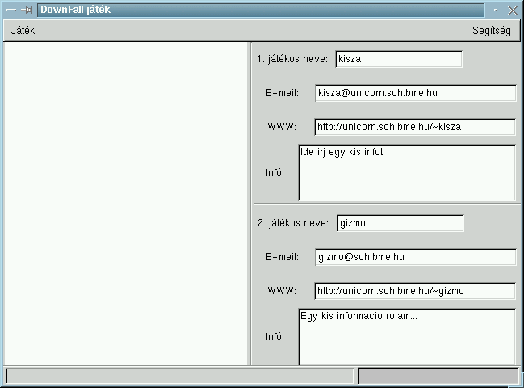
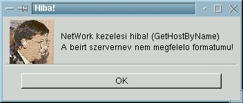
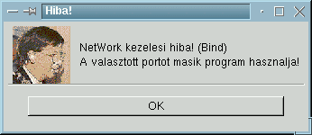
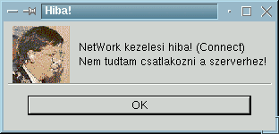
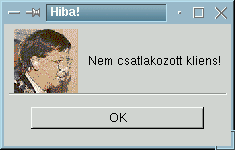
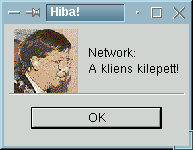
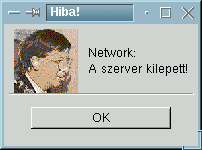

A csatlakozas utan mar minden latszik
A megadott szervernev nem megfelelo, vagy
nem helyes formaban lett beirva. A gep pontos nevet kell beirni a szervernev-
hez, hogy a program megtalalja.
Egy masik program ugyanazet a portot hasznalja,
amit kivalasztottal. Legyszives, valassz egy masik portot, hogy el tudjon
indulni a szerver.
A kivalasztott szerveren nem talaltam meg a
beallitott porton a jatekot. Meg kell nezni, hogy a port jol van-e beallitva.
Amennyiben nem a helyes portot adjuk meg, akkor nem tud letrejonni a kapcsolat.
A beallitott idointervallumon belul nem jott
letre kapcsolat a szerverrel. Valoban van olyan kliens, aki csatlakozni
szeretne a szamitogepedhez?
A kapcsolat mar letrejott, de a kliens gep
valamilyen okbol kilepett. Szabalyos kilepes volt.
A kapcsolat mar letrejott, de a szerver gep
valamilyen okbol kilepett. Szabalyos kilepes volt.